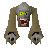

Iron mace
| Config name | iron_mace |
| Item id | 1420 |
| Value | 63 gp |
| Weight | 4lb |
| Members | No |
| Tradeable | Yes |
| Stackable | No |
| Equip slot | righthand |
| Options | Wield |
| Category | weapon_spiked |
| Defined in | scripts/skill_combat/configs/melee/maces.obj |
| Equipment stats | Stab att 4, Slash att -2, Crush att 9, Strength 7, Prayer 1 |
Iron mace
A spiky mace.
Show 2 ground spawns on the world map → Open in knowledge graph →
How to make
| Skill | Level | XP | Ingredients | Tool | How | Where | Makes |
|---|---|---|---|---|---|---|---|
| Smithing | 17 | 25.0 | interface | anvil | 1 |
Dropped by
| NPC | Level | Quantity | Rarity | Via | Notes |
|---|---|---|---|---|---|
 Ghast | 30 | 1 | Always | ||
| 24 | 1 | 3/128 (2.34%) | |||
| 7 | 1 | 1/128 (0.78%) | |||
| 8 | 1 | 1/128 (0.78%) | |||
| 8 | 1 | 1/128 (0.78%) | |||
| 29 | 1 | 1/128 (0.78%) |
Sold at
| Shop | Shopkeeper | Stock |
|---|---|---|
| Flynn's Mace Market. | 4 |
Ground spawns
| Area | Coordinates | Level | Count | Map |
|---|---|---|---|---|
| Edgeville | 3111, 3517 | 0 | 1 | view |
| Necromancer | 2675, 3299 | 0 | 1 | view |
Quests
Referenced in scripts
scripts/drop tables/scripts/barbarian.rs2scripts/drop tables/scripts/dark_warrior.rs2scripts/drop tables/scripts/zombie.rs2scripts/levelrequire/scripts/tier1.rs2scripts/levelup/scripts/levelup_unlocks_smithing.rs2scripts/quests/quest_druidspirit/scripts/ghast.rs2